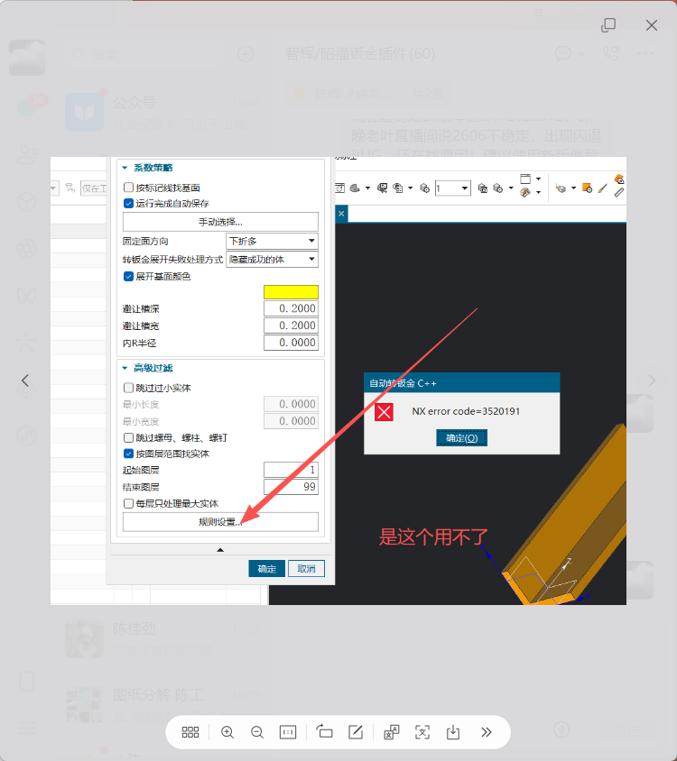
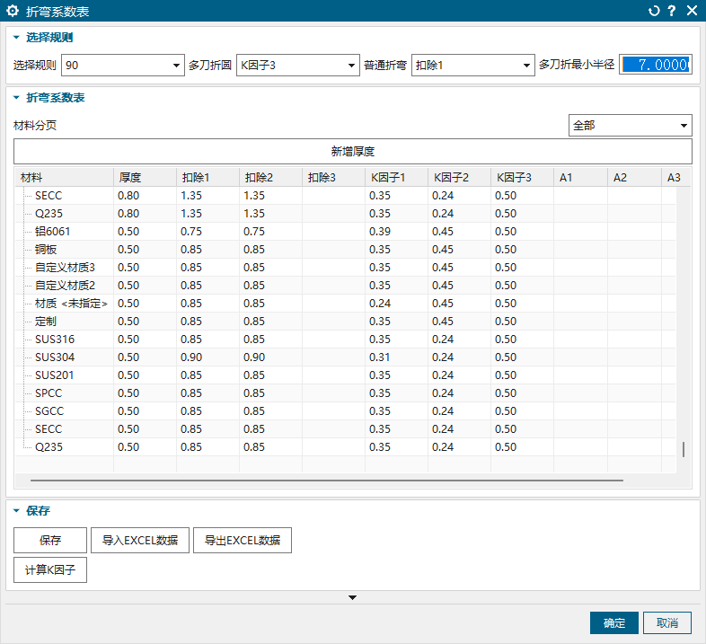
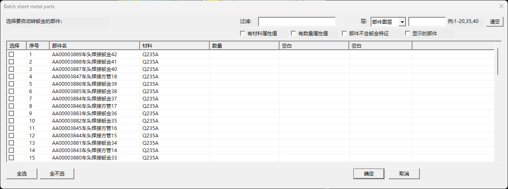

一、第一次使用：照这 7 步操作
多数零件不需要手动选面。先设好规则和筛选范围，再让程序自动转换、设置中性因子并创建展开。
- 打开模型。可以打开单个零件，也可以在装配中运行。装配环境会先让你勾选要处理的子部件。
- 先点“规则设置…”。确认材料、板厚、折弯条件对应的中性因子规则已经正确保存。
- 选择固定面方向。成品主要向下折就选“下折多”；主要向上折就选“上折多”。
- 填写工艺参数。按企业工艺填写避让槽深、避让槽宽和内 R 半径；不确定时先使用验证过的默认值。
- 限定处理范围。通常勾选“按图层范围找实体”，填写起始、结束图层，并按需要排除小实体和紧固件。
- 决定是否自动保存。试运行建议先关闭；确认规则正确后再开启，以免批量保存不需要的结果。
- 点击“确定”。等待处理完成。若有失败，根据颜色、高亮或结果信息定位失败体。
二、主对话框真实界面

真实运行截图。这里只用网页窗口裁掉了右侧错误框和聊天背景，控件本身没有重画或替换。
界面从上到下分为两组
- 系数策略：决定怎样找基面、固定面朝向、失败后的显示方式、展开基面颜色，以及转钣金使用的基础工艺参数。
- 高级过滤：决定哪些实体参加本次批量处理，例如图层范围、最小尺寸、是否排除螺母柱，以及是否每层只取最大实体。
按钮的基本区别
“手动选择…”会立即进入逐个实体的人工选面流程；“确定”则按当前参数自动处理尚未手动处理的对象。
三、每个选项怎么用
| 界面选项 | 作用 | 什么时候使用 |
|---|---|---|
| 按标记线找基面 | 当模型存在有效标记线时，优先用标记线确定所属材料侧面链，再在该面链内选展开基面。 | 图纸或建模规范已经用标记线表达展开朝向时开启。没有可靠标记线时关闭。 |
| 运行完成自动保存 | 批量处理结束后保存被处理的零件。 | 正式批处理且结果已验证时开启；测试参数时建议关闭。 |
| 手动选择… | 人工选择一个实体的固定基面，再选择该基面上的直线边作为 X 方向。 | 自动基面不符合工艺要求，或个别零件必须固定特殊方向时使用。 |
| 固定面方向 | 在候选材料侧面链之间选择“下折多”或“上折多”的方向偏好。 | 根据零件主要折弯朝向选择。它先决定面链方向，再在该链内评分选面。 |
| 失败处理方式 | 可选“隐藏成功的体”“失败体改红色”或“高亮失败体”。 | 批量排查推荐失败改红或高亮；只想留下未处理对象时可隐藏成功体。 |
| 展开基面颜色 | 把最终使用的展开基面改成所选颜色，便于复查。 | 调试基面选择或抽检结果时开启；颜色框只有开启后才生效。 |
| 避让槽深 / 宽 | 创建转钣金特征时使用的折弯避让槽参数。 | 按企业工艺和当前单位输入。默认示例为 0.2000。 |
| 内 R 半径 | 创建转钣金时采用的内侧折弯半径。 | 有统一工艺要求时填写；不同材料或板厚应先验证。 |
| 跳过过小实体 | 启用最小长度、最小宽度过滤，小于限制的实体不参与处理。 | 模型里有碎体、辅助体或非常小的非产品实体时开启。 |
| 跳过螺母、螺柱、螺钉 | 识别并排除常见紧固件类实体，避免把螺母柱误当钣金体转换。 | 一个零件内同时存在钣金大板和紧固件实体时建议开启。 |
| 按图层范围找实体 | 只收集起始图层到结束图层之间的实体；起止填反时程序会自动按小到大处理。 | 按图层组织加工对象时建议常开，例如只处理 1～99 层。 |
| 每层只处理最大实体 | 同一图层有多个候选实体时，只保留包围盒体量最大的一个。 | 每层确实只放一件主板、其他都是附件时开启。若同层有多件都要处理，必须关闭。 |
| 规则设置… | 打开插件内置的折弯系数规则表，维护材料、板厚、折弯类型与中性因子的对应规则。 | 第一次使用、材料/板厚变化，或发现展开长度不对时先检查这里。 |
四、折弯系数表怎么设置
在主对话框点击“规则设置…”会打开下面的真实界面。这里决定不同材料、板厚和折弯角度采用哪一列扣除值或 K 因子。

真实“折弯系数表”截图。表格中的数值仅代表截图当时的数据，正式生产请使用本企业已经验证的工艺数据。
| 区域或控件 | 作用与操作方法 |
|---|---|
| 选择规则 | 选择要维护的折弯角度区间，包括 90°、0～90°、90～180°、180～360°。每个角度区间可以分别指定普通折弯和多刀折圆使用的系数列。 |
| 普通折弯 | 指定普通折弯从“扣除1～3、K因子1～3、A1～A3”中的哪一列取值。截图中选择的是“扣除1”。 |
| 多刀折圆 | 指定多刀折圆采用的系数列。截图中选择的是“K因子3”。 |
| 多刀折圆最小半径 | 用于区分普通折弯与多刀折圆的半径门槛。大于 0 时启用；达到门槛的圆弧折弯按“多刀折圆”列取值。单位跟随当前零件单位。 |
| 材料分页 | 选择“全部”查看所有材料，或只查看某一种材料，便于在材料较多时维护。 |
| 新增厚度 | 为材料增加一个厚度规格。通常会基于当前选中行建立新行，再修改厚度和各列工艺值。 |
| 系数表格 | 双击需要修改的单元格，维护材料、厚度及扣除值/K 因子。A1～A3为预留的附加系数列，只有上方规则选中对应列时才参与计算。 |
| 保存 | 把当前规则写入配置文件。建议每次修改完成后立即保存。 |
| 导入/导出EXCEL数据 | 用于批量交换表格数据。当前实现使用 CSV 格式；导入后先核对材料、厚度和小数，再点击“保存”。 |
| 计算K因子 | 打开 K 因子计算工具，根据试折或已知展开数据辅助计算，再把结果填入相应列。 |
| 确定 / 取消 | “确定”会保存当前修改后关闭；“取消”关闭窗口且不保留尚未保存的修改。 |
五、程序怎样自动选择展开基面
程序不会简单地从所有面里直接挑“面积最大面”，也不会为了算位置而逐个试展开。它先用共边及相切折弯圆柱面构造真实连续的材料侧面链；共面片只有彼此存在共边才会合并，互不相连的共面绝不会被当成同一段。
- 确定方向链。根据“上折多 / 下折多”比较候选面链的内、外折弯关系，先确定更符合方向偏好的面链。
- 在选定面链内评分。面积、位置、相邻 R 和内环四项共同决定基面，不跨到另一条不相连面链。
- 面积分：候选面达到本链最大面积的 70% 及以上记 3 分；30%～70% 记 2 分；低于 30% 记 1 分。
- 位置分：先把连续面链按实际截面顺序排开。每段平面的长度取垂直于折弯轴方向的端点投影跨度，段与段之间再加上折弯圆弧长度（半径 × 折弯角）。总长的一半就是截面中心；中心落入的平面段记 3 分，与中心段直接相邻的段记 2 分，其余段记 1 分。
- 相邻 R 分：相邻折弯圆柱面达到 3 个及以上记 3 分；2 个记 2 分；1 个记 1 分；没有记 0 分。
- 内环分：候选面存在内环时加 1 分。
六、代码实际怎样处理每一个实体
下面按当前源码的执行顺序说明。哪些条件会跳过、何时新建特征、何时只查实体自己的特征，都在这里列明。
- 先确定部件范围。零件环境只处理当前工作部件；装配环境只处理前置部件列表中勾选的原型部件，并按原型去重。程序逐个把它们设为工作部件，结束后再恢复原工作部件。
- 实体基本过滤。对象必须仍然有效并且是实心体；若部件本身没有批处理所需属性，则实体必须有自己的材料、数量等批处理属性，否则计入“因属性过滤跳过”。
- 图层过滤。开启时只保留起始层至结束层内的实体；关闭时不按层排除。起止值在界面读取时按小到大使用。
- 过小实体过滤。包围盒三边按“大、中、小”排序为长度、宽度、高度。长度小于最小长度或宽度小于最小宽度就跳过；两个门槛都达到才继续。
- 紧固件过滤。开启后再按投影轮廓、高度、外形尺寸、圆柱面和完整/半圆边等几何判断螺母、螺柱、螺钉类体；命中就跳过，不再参加“每层最大体”比较。
- 每层最大体分支。关闭时保留同层全部候选；开启时每层只留下包围盒评分最大的实体。评分为“长度 × 宽度 × max(高度, 0.001)”，不是最大单个面的面积。
- 部件是否需要转钣金。若本部件候选中至少有一个普通体，程序先统一提交当前避让槽、内 R 等钣金首选项；全部候选原本已是钣金体时不重复提交这一步。
- 普通体分支。先按自动或手动方式取得固定面，然后创建 Convert to Sheet Metal。转换后直接给该新钣金体应用中性因子；因为它是本轮刚转换的，不再全局查找历史展开特征，直接按“新建 Flat Pattern”处理。
- 原本已是钣金体分支。不再创建转钣金，只检查当前实体自己的钣金特征；只有这一分支才查找属于该实体的现有 Flat Pattern。找到时更新它，找不到时新建一个。不会对零件全部普通特征逐个尝试 FlatPatternBuilder。
- 中性因子分支。按材料、板厚、角度区间、普通折弯/多刀折圆及规则表所选列逐个处理弯曲面；已有对应中性因子特征时更新，没有时创建。Z 厚度属性的模型更新延迟到本部件末尾统一执行。
- 自动基面与 X 方向。自动模式在转换后重新按上折/下折面链及四项评分确定展开面；X 向边先尝试单折弯专用边，再取基面最长直线边。仍找不到可用边时，Flat Pattern 使用 NX 默认方向。
- 手动基面与 X 方向。手选面作为固定面；完成转换后必须再选择转换后实际基面上的直线边。取消或选到不在基面上的边，本实体记失败，但之前已经提交的转钣金特征不会被对话框取消自动回滚。
- 创建或更新展开。普通体用空 Builder 新建展开；已有钣金体用找到的本体 Flat Pattern Builder 更新，或在没有时新建。随后解析展开实体并检查实际厚度。
- 展开厚度校验。展开实体厚度与源钣金厚度不符合时，本体记为失败，错误信息写明期望厚度和实际厚度；通过时给源体及可解析的展开体写入展开尺寸属性。
- 失败显示分支。“隐藏成功的体”只在成功且不是纯手动处理时隐藏结果体；“失败体改红色”只给失败体设红色；“高亮失败体”只高亮失败体。三种方式都不修复失败原因。
- 保存分支。开启自动保存且本部件确实产生结果时才保存该 PRT，并包含组件保存；关闭时模型内结果已经存在，但文件仍处于未保存状态。
七、手动选择基面和 X 方向
真实“手动定义基面X向”分支界面。截图后使用“取消”返回，没有提交基面选择。
- 在主对话框中先设置好避让槽、内 R、颜色和失败处理方式。
- 点击“手动选择…”，在模型上选择需要处理实体的平面作为固定基面。
- 按提示选择刚才基面上的直线边作为 X 方向。圆弧边或不在该面上的边不能作为有效 X 向边。
- 程序立即处理当前实体，然后继续等待选择下一个实体；可连续处理多个特殊零件。
- 不再手动处理时取消选择，返回主对话框。
- 若还要自动处理其他实体，再点击主对话框“确定”；已经手动处理过的实体不会重复进入本次自动处理。
八、单零件与装配环境
单零件
直接进入主参数对话框，程序在当前工作零件中按图层和过滤条件收集实体。
装配
装配环境运行时，先出现下面的真实部件选择窗口。筛选并勾选要处理的子部件，确认后才进入主参数对话框。

真实装配零件选择界面。列表只负责决定“处理哪些部件”，具体转钣金参数在点击“确定”后的主对话框设置。
| 控件 | 使用说明 |
|---|---|
| 过滤 | 输入部件名或列表中显示的属性关键字，列表立即缩小到匹配项。 |
| 层 | 可选择按“部件图层”或“装配图层”过滤。前者看子部件内部对象所在层，后者按组件在装配中的层判断。 |
| 图层范围 | 支持单层、逗号分隔和连续范围，例如 1、1,20,35、1-20,35,40。 |
| 清空 | 清除关键字、图层范围和过滤条件，恢复完整候选列表。 |
| 属性过滤 | “有材料属性值”“有数量属性值”只保留对应属性不为空的部件；“部件不含钣金特征”只看尚未转钣金的部件；“显示的部件”只看当前可见部件。 |
| 部件列表 | 勾选第一列才表示要处理。可对照序号、部件名、材料和数量核对对象。 |
| 全选 / 全不选 | 只作用于当前过滤后列表里显示的对象。建议先过滤，再全选，避免把无关部件带入批处理。 |
| 确定 / 取消 | “确定”接受勾选并进入主参数对话框；“取消”退出本次操作，不处理部件。 |
进入主参数对话框后，每个选中部件分别判断是否已有钣金特征：
- 不是钣金体：先创建转钣金并更新，再创建中性因子和展开。
- 已经是钣金体：直接查当前实体自己的钣金/展开特征，缺少展开时再创建。
- 完成后按“自动保存”和失败处理方式保存或标识结果。
九、四种常用设置方案
普通钣金零件批处理
图层范围开启；按零件方向选择上折多/下折多；展开基面颜色开启；先关闭自动保存试跑。
大板与螺母柱同层
开启“跳过螺母、螺柱、螺钉”。若该层只应处理大板，也可开启“每层只处理最大实体”。
同层有多件钣金都要转
关闭“每层只处理最大实体”，否则每层只会留下一个最大候选体。
个别件基面方向特殊
先用“手动选择…”处理特殊件，再返回主对话框点击确定处理剩余对象。
十、常见问题与排查
为什么某个实体完全没有处理？
依次检查：是否在图层范围内；是否被“过小实体”过滤；是否被识别为紧固件；是否开启了“每层只处理最大实体”；装配列表中是否勾选了对应部件。
为什么选到的基面不是面积最大的面？
基面先受面链方向限制，再综合面积、位置、相邻 R 和内环评分。最大面积只是评分项之一。可开启基面颜色核对，再调整上下折偏好、标记线或改用手动选择。
为什么大板同层的螺母柱也被处理？
检查“跳过螺母、螺柱、螺钉”是否开启；如果每层只需要主板，再开启“每层只处理最大实体”。注意“最大实体”按实体包围盒体量比较，不按单个面面积比较。
为什么批量到后面越来越慢？
复杂零件、历史特征较多、重复转钣金或重复展开都会增加 NX 更新成本。当前版本优先检查实体自己的特征，避免对零件所有非展开特征反复创建 Builder；仍然较慢时，先用图层和尺寸过滤减少对象，并检查零件是否存在大量历史钣金特征。
点击“规则设置…”报 NX error code=352019 怎么办？
当前版本使用 DLL 内置规则对话框，正常情况下不再依赖外部 DLX 路径。若仍报错，先完全退出 NX 后确认插件 DLL 已更新，再重新启动；不要在 NX 已加载旧 DLL 时直接覆盖后继续测试。
更新插件后点击没有反应怎么办？
先完全退出 NX，让已加载的 DLL 卸载，再启动测试。若仍无反应，检查运行目录文件与清单哈希是否一起更新，避免防篡改校验把新 DLL 判定为不一致。